UNIONS-3500:
First Cosmological Constraints
from 2D Cosmic Shear
CosmoStat, CEA Paris-Saclay
on behalf of the UNIONS weak lensing team
Rencontres de Moriond — Cosmology
March 27, 2026
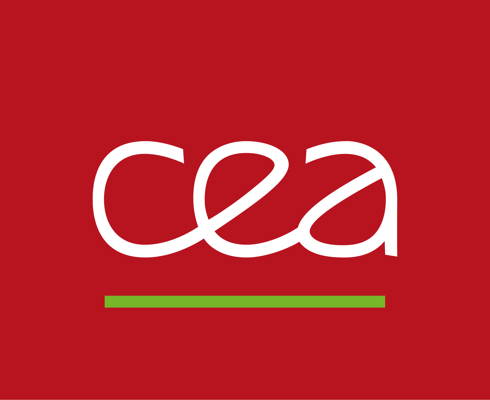
Cosmic shear benefits from independent measurements
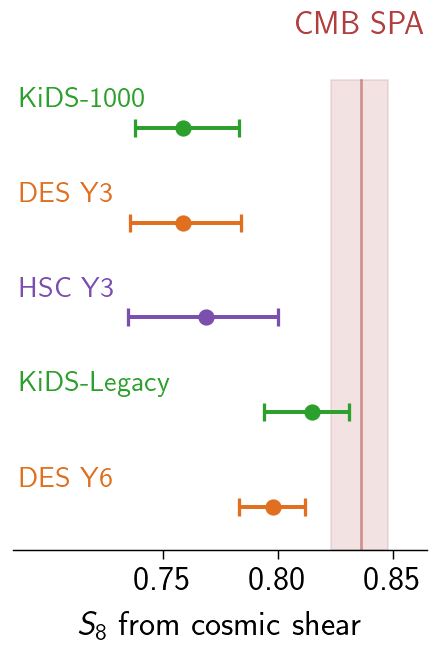
Credit: DES Collaboration
- \(S_8\) seems to be converging as systematics improve; consensus is important!
- \(S_8\) seems to be converging as systematics improve; consensus is important!
- But the northern sky has no wide-field lensing surveys
UNIONS adds deep wide-field lensing constraints in the North
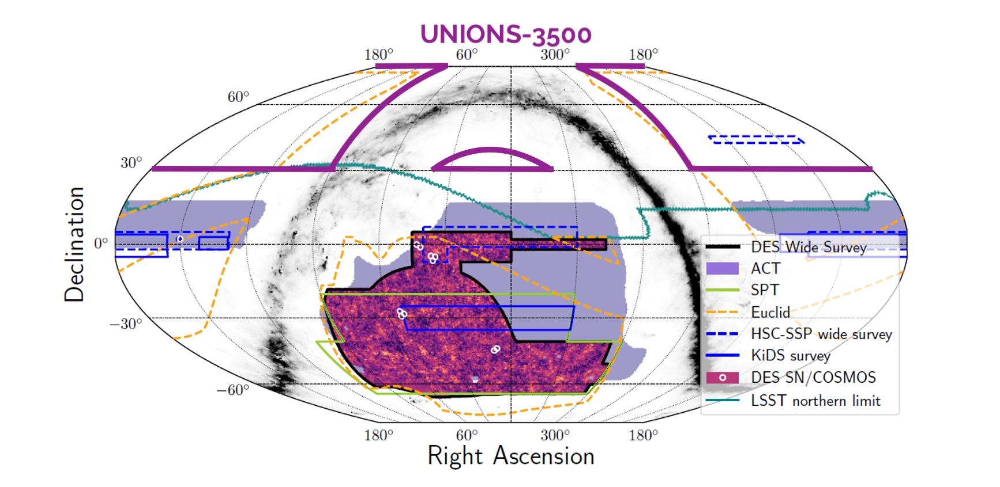
Credit: DES Collaboration
- Different instrument, on-sky systematics, sample variance
- New cross-correlation opportunities (DESI, Planck, BOSS)
UNIONS-3500 constraints are
the culmination of ~10 years of work
- A small team of ~10 people
- Non-tomographic; multi-bin redshift calibration in preparation
- Inference with correlation functions \(\xi_\pm(\theta)\) and band powers \(C_\ell\)
Building on the catalog described in Sacha’s talk:
- Paper III: B-mode validation (Daley et al.)
- Paper IV: configuration-space constraints (Goh et al.)
- Paper V: harmonic-space constraints (Guerrini et al.)
The 2D cosmic shear team
Core members in alphabetical order (many others have contributed over the years):
(redshift estimation)
(B-modes, covariance,
masking)
(catalog validation,
systematics)
(catalog, image
simulations)
(inference, covariance,
masking)
(catalog, wisdom)
(inference, PSF
systematics)
Paper III uses B-mode estimators to characterize systematics
- To leading order, B-modes serve as a systematics null test
- Synthesize \(\xi_\pm^B\), COSEBIs, and \(C_\ell\) statistics to inform scale cuts and sample selection
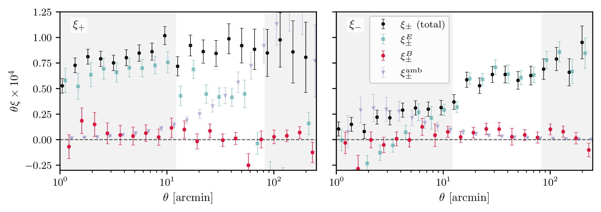
Paper IV jointly fits cosmology and PSF leakage in real space
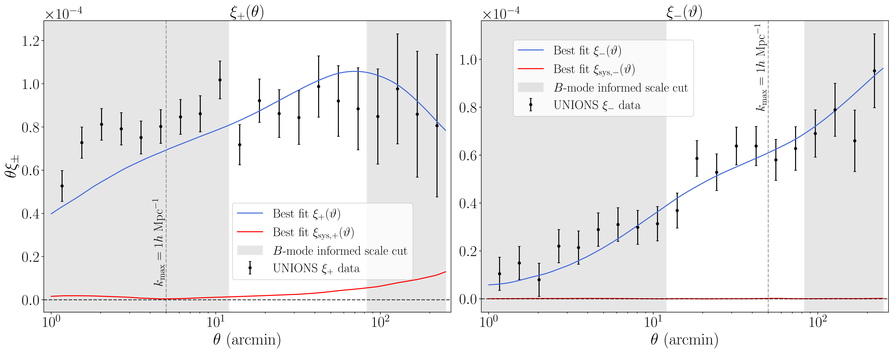
\(\xi_\pm(\theta)\) with best-fit model and leakage systematics
Paper V provides harmonic-space constraints from the same data
- Same catalog, \(n(z)\), and blinding, but different basis and weighting of scales
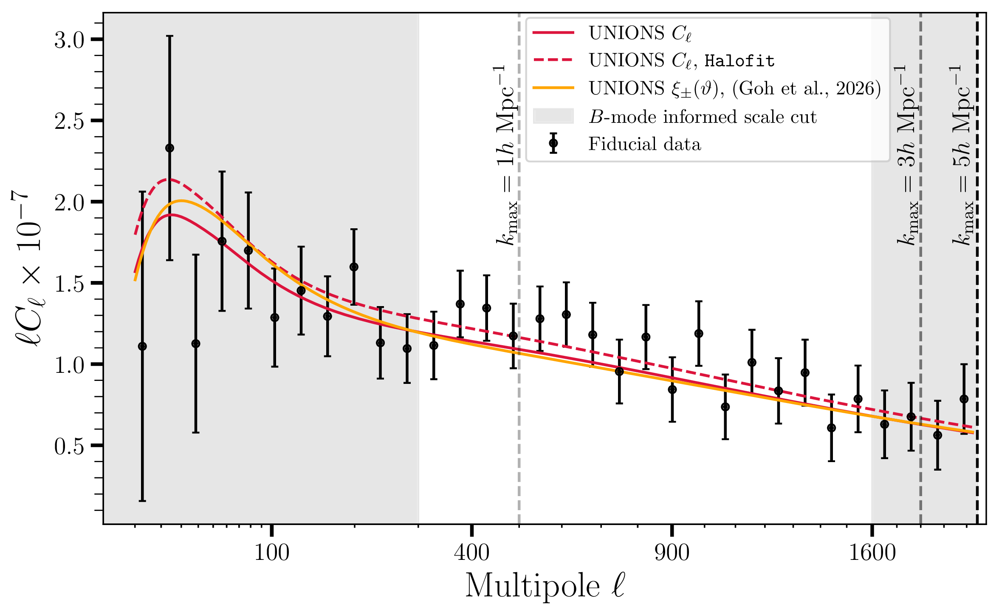
All analysis choices fixed before unblinding
- Blind by modifying \(n(z)\): three realizations A/B/C, one unshifted
- Catalog version, scale cuts, and robustness criteria frozen before collaboration-wide unblinding
- Caveat: cosmology-paper authors were inadvertently unblinded ~2 weeks before. No analysis choices changed after this point
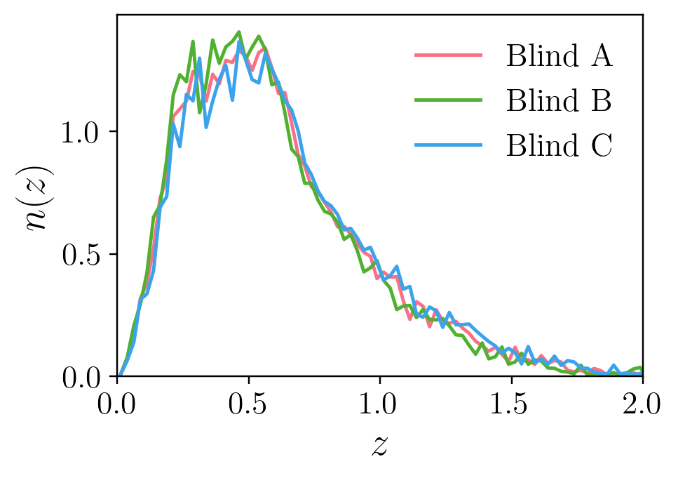
Three redshift blinds used in this analysis. B turned out to be real.
Different B-mode statistics do not always agree
- Over the full range (\(1\)–\(250'\), \(\ell \lesssim 2000\)): \(\xi_\pm^B\) and \(C_\ell^{BB}\) pass, but COSEBIs fail
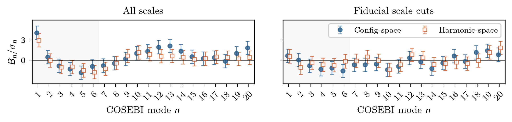
- Each statistic weights scales differently; we require all three to pass
- Not able to decisively identify the origin of these B-modes
Sample selection and scale cuts informed by B-mode tests
-
Scale cuts informed by B-mode PTEs, PSF leakage, and blinded \(S_8\) dependence
(Papers IV/V) -
Adopted cuts: \([12, 83]'\), \(\ell = 300\)–\(1600\)
(\(k_\mathrm{max} \approx 2.6\;h\,\mathrm{Mpc}^{-1}\)); all PTEs \(> 0.18\)
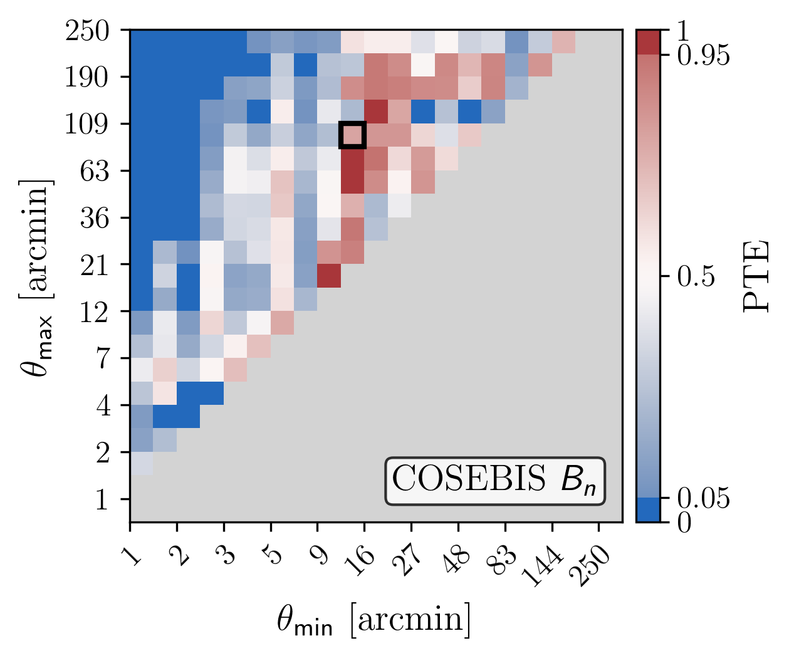
COSEBIS PTEs as a function of lower and upper scale cut. Square: adopted cuts.
We marginalize over nuisance parameters
with conservative priors
- Covariance — CosmoCov for \(\xi_\pm\), iNKA for \(C_\ell\); validated with jackknife and 350 GLASS mocks
- Redshifts — \(r\)-band only; \(n(z)\) from CFHTLenS cross-match + SOM (prior inflated \({\times}1.4\))
- Intrinsic alignments — NLA model; \(A_\mathrm{IA}\) degenerate with \(S_8\) especially with one bin; Gaussian prior from red/blue split, \(0.83 \pm 0.7\) (width \({\times}2\))
- \(m\)-bias — from image simulations (Paper II); \(\mathcal{N}(-0.057, 0.014)\) (inflated \({\times}3\))
UNIONS constraints agree with Planck and Stage III at ~1σ
| \(S_8\) | \(\Omega_m\) | |
|---|---|---|
| \(\xi_\pm\) | \(0.86 \pm 0.08\) | \(0.27^{+0.14}_{-0.07}\) |
| \(C_\ell\) | \(0.92 \pm 0.08\) | \(0.22^{+0.18}_{-0.06}\) |

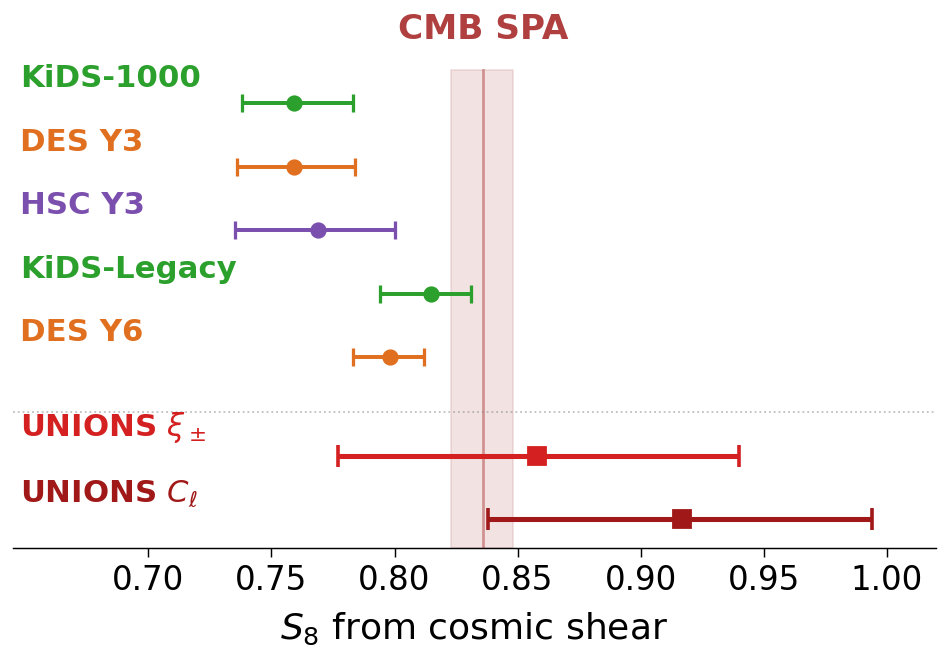
\(S_8\) is robust to analysis choices
but sensitive to the IA prior
- Most robustness tests shift \(S_8\) by \(< 0.4\sigma\)
- \(A_\mathrm{IA}\) is the dominant nuisance: largely unconstrained, removing it shifts \(S_8\) by \(0.7\sigma\)
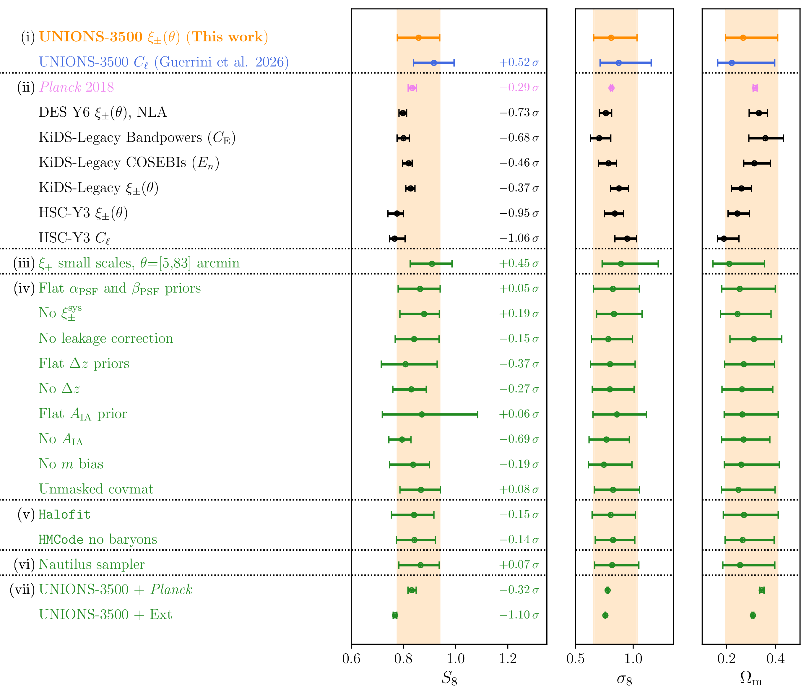
Two analyses agree to ~2σ, calibrated on 350 GLASS mocks
- Shared inputs: mocks calibrate the expected scatter between analyses
- 2.6% of mocks show a smaller \(\Delta S_8\)
- An unblinding criterion, to our knowledge a first for cosmic shear
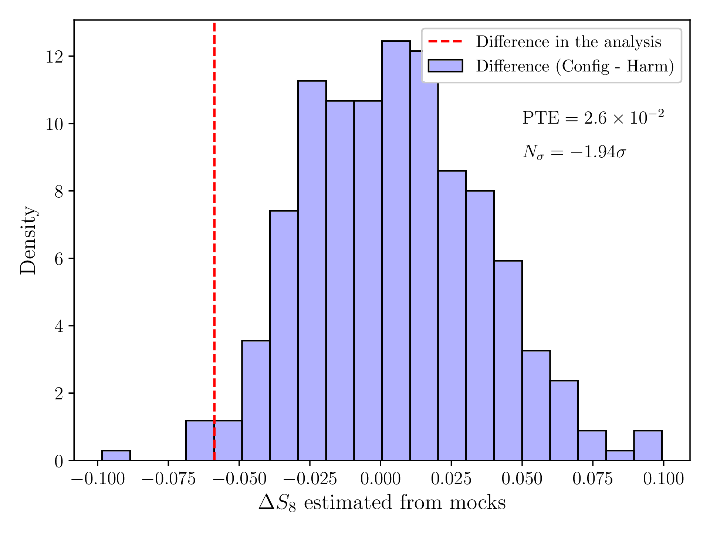
\(\Delta S_8\) between config and harmonic space:
data vs 350 GLASS mocks.
Thank you!
Thank you!
cail.daley@cea.fr
UNIONS delivers the first northern-sky cosmic shear constraints
- Key result: \(S_8 = 0.86\) (real space), \(0.92\) (harmonic), consistent with CMB at \({\sim}1\sigma\); systematic uncertainties inflated \({\times}1.4\)–\({\times}3\) to be conservative
-
Systematic validation: three B-mode statistics converge on clean scales;
PSF leakage marginalized in the likelihood -
Pipeline agreement: real-space and harmonic-space analyses marginally consistent,
calibrated on 350 GLASS mocks. An unblinding criterion -
Next:
- Tomography and shape measurement improvements will tighten our constraints
- Looking forward to \(3{\times}2\)pt and cross-correlations with DESI and CMB lensing
Backup
Masking creates ambiguous modes that require E/B-separable statistics
Spin-2 shear fields can be decomposed into E-modes containing the vast majority of lensing information and B-modes, which are a probe of systematics at UNIONS noise levels.
In the presence of masking, some ambiguous modes cannot be cleanly attributed to E or B.
\(\implies\) need E/B-separable statistics
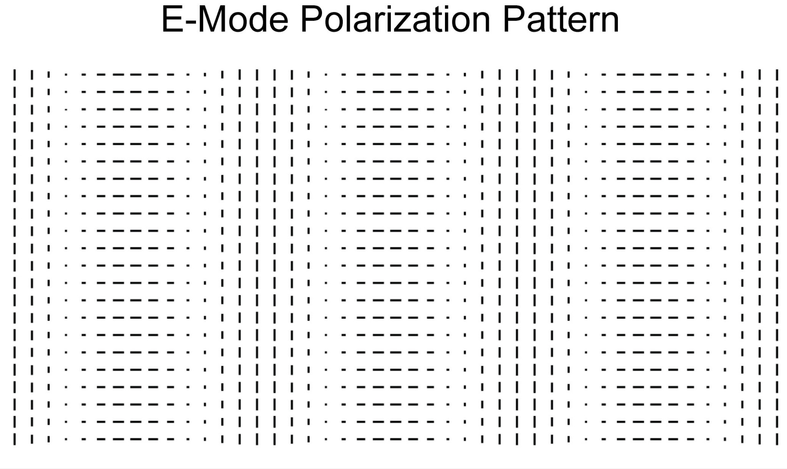
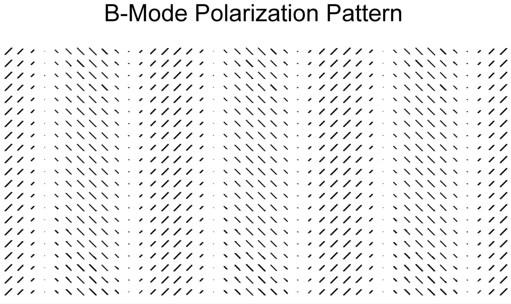
Only the PSF size-corrected catalog passes across all statistics and scale cuts
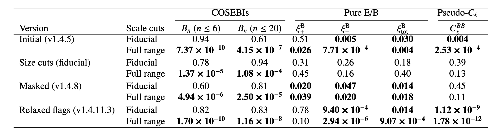
\(p\)-values for four catalog versions across fiducial and full-range cuts. Only the fiducial (PSF size-corrected) passes all three statistics.
\(C_\ell^{BB}\) and \(C_\ell^{EB}\) are consistent with zero within the adopted scale cuts
NaMaster band-power estimation with mode-coupling correction.
Gray shading marks the harmonic-space scale cuts: \(\ell = 300\)–\(1600\).
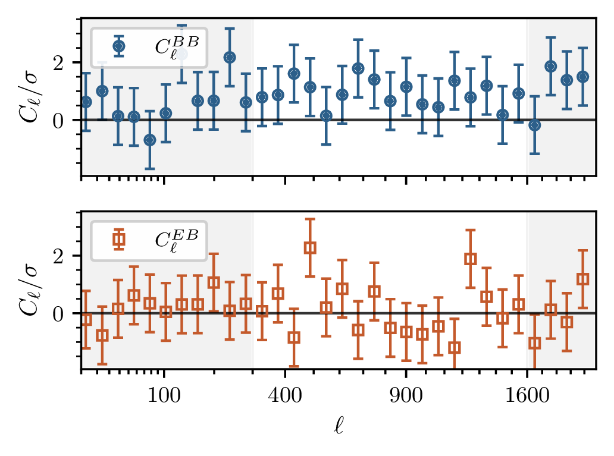
Accidental unblinding by comparing maximum likelihood across blinds
- Dashed lines: maximum likelihood (no prior penalty)
- ML free to push \(\Delta z\) and \(A_\mathrm{IA}\) to extreme values that compensate the \(n(z)\) modification
- MAP (contours) rejects these, but ML reveals which blind is physical
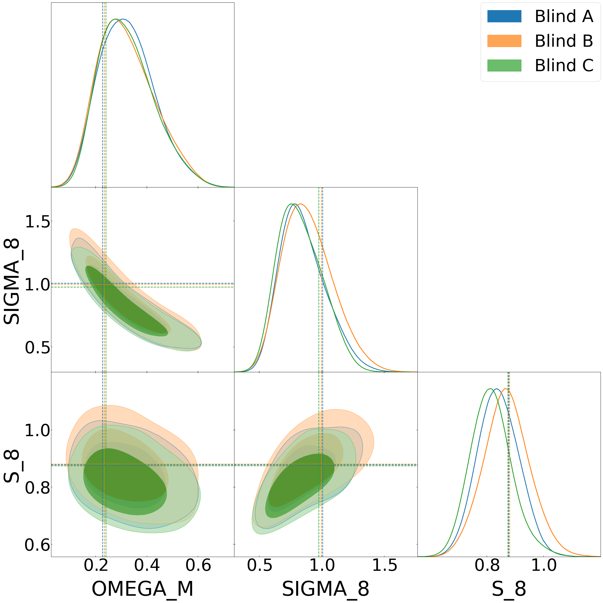
\(A_\mathrm{IA}\) is unconstrained by the data but strongly affects \(S_8\)
\(S_8\)–\(\Omega_m\)–\(A_\mathrm{IA}\) from configuration-space inference.
- Gaussian \(A_\mathrm{IA}\) prior (orange) vs flat prior (blue) vs no IA (green)
- \(A_\mathrm{IA}\) is largely unconstrained by the data but strongly affects \(S_8\)
- A lower \(A_\mathrm{IA}\) gives lower \(S_8\)

\(S_8\) is robust to \(k_\mathrm{max}\): nonlinear scale cuts shift constraints by \(< 0.2\sigma\)
- Fiducial \(\ell_\mathrm{max} = 1600\) (\(k_\mathrm{max} \approx 2.6\;h\,\mathrm{Mpc}^{-1}\))
- Tested \(k_\mathrm{max} \in [1, 3, 5]\;h\,\mathrm{Mpc}^{-1}\)
- All shifts \(< 0.2\sigma\) from fiducial
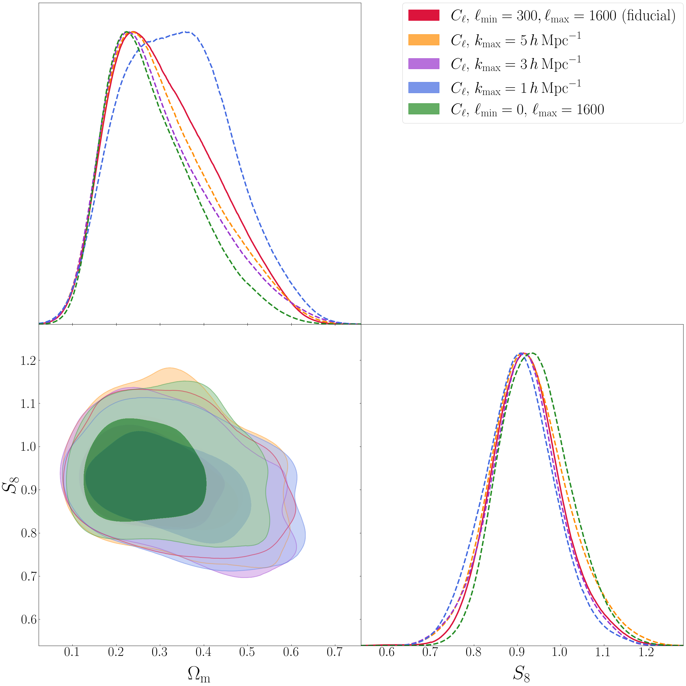
Angular scale cuts map to different \(k_\mathrm{max}\) for \(\xi_+\) and \(\xi_-\)
- Color: fraction of \(C_\ell\) signal from \(k < k_\mathrm{max}\) at each \(\theta\)
- Red curve: 90% signal boundary
- \(\xi_+\) at \(12'\): \(k_\mathrm{max} = 0.43\;h\,\mathrm{Mpc}^{-1}\)
- \(\xi_-\) at \(12'\): \(k_\mathrm{max} = 2.85\;h\,\mathrm{Mpc}^{-1}\)
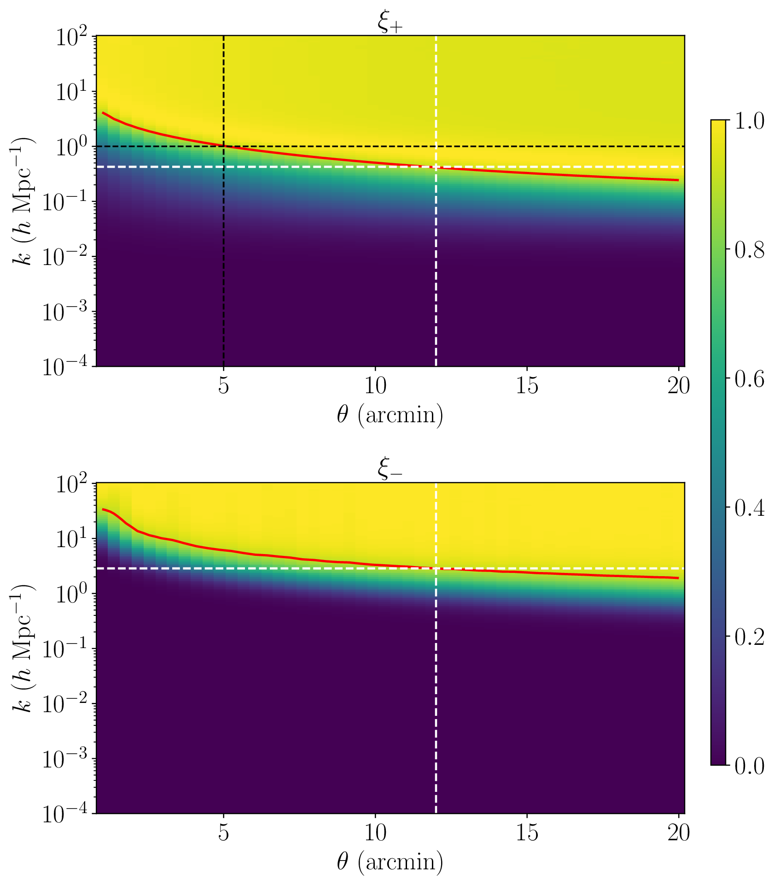
Harmonic-space \(S_8\) is robust to scale cuts and analysis choices
- Scale cuts, nonlinear model, covariance, and leakage choices all shift \(S_8\) by \(< 0.2\sigma\)
- Consistent across all three blinds
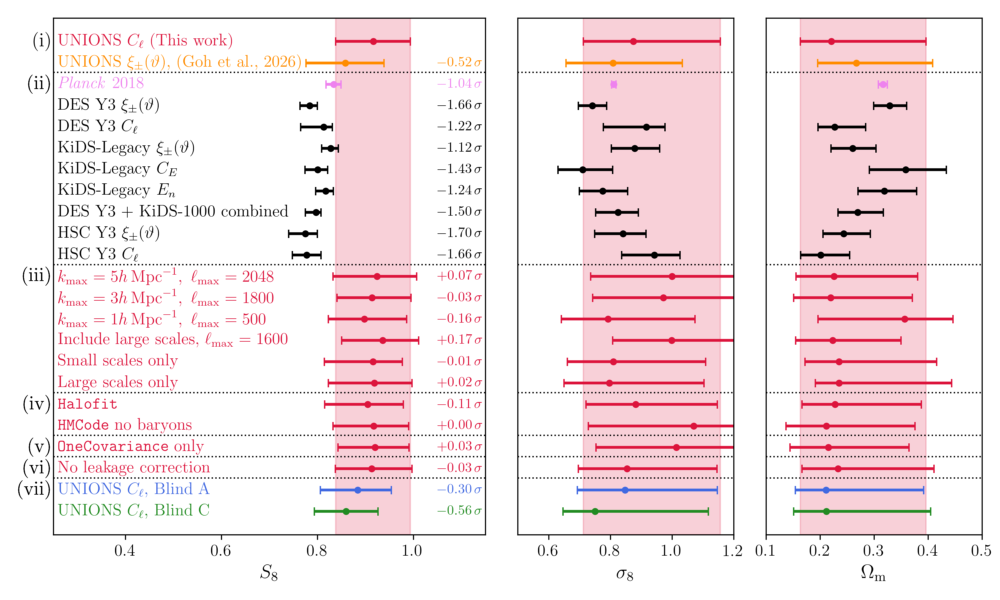
The \(\Omega_m\) difference between pipelines is unremarkable
- \(\Delta\Omega_m = 0.046\), PTE \(= 0.20\), \(N_\sigma = 0.83\)
- The tension is in \(S_8\) specifically, not a general disagreement
- Broad \(\Omega_m\) posteriors mean almost any difference is consistent
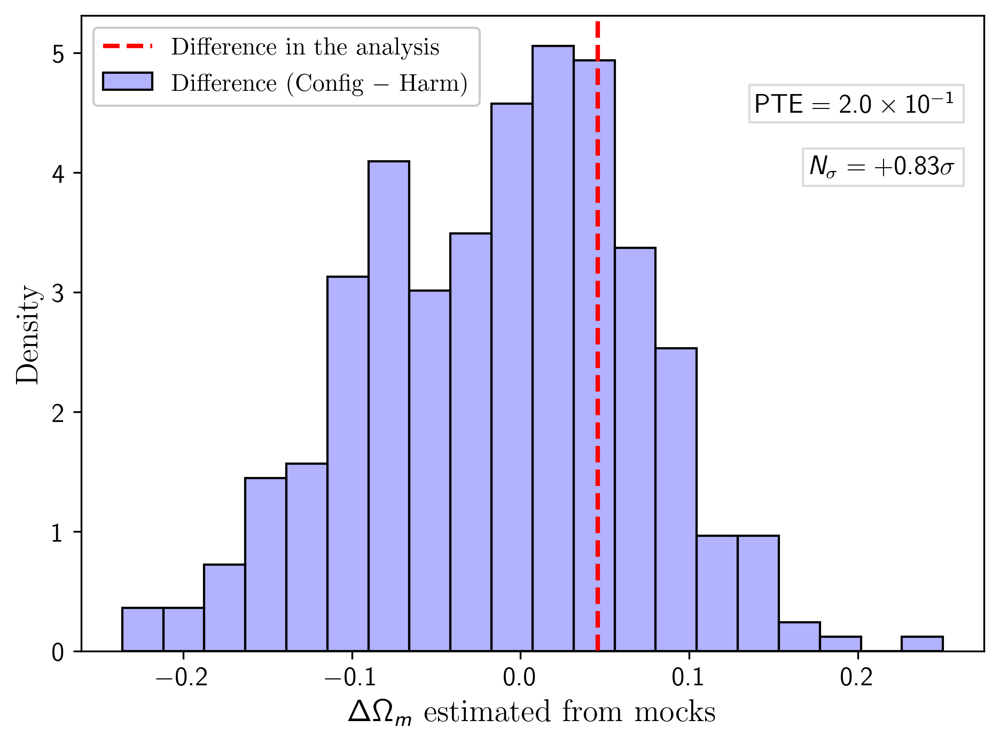
Config and harmonic posteriors agree across all parameters
UNIONS \(C_\ell\) (red) vs \(\xi_\pm\) (orange).
- Same blinded inputs
- Agreement across all parameters
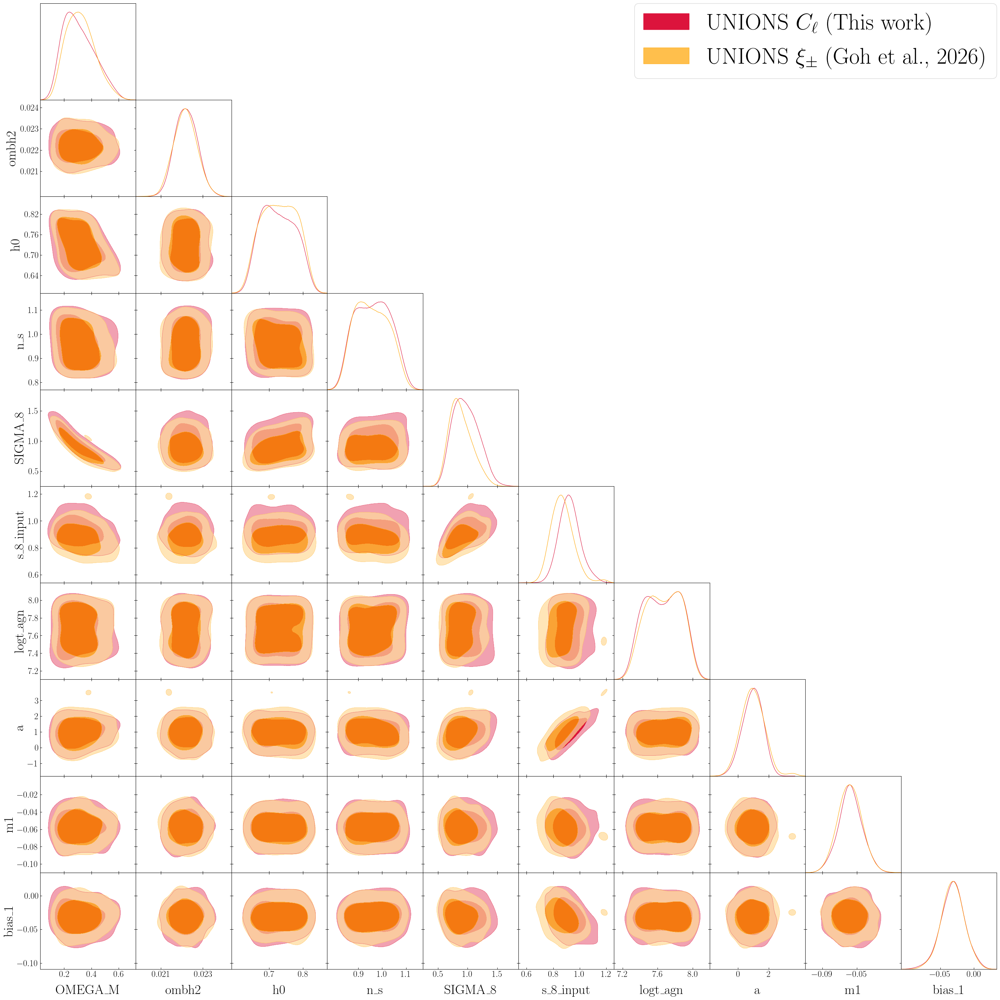
Cail Daley | Rencontres de Moriond — Cosmology | March 27, 2026